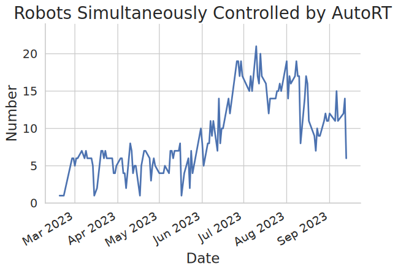

Abstract
Foundation models that incorporate language, vision, and more recently actions have revolutionized the ability to harness internet scale data to reason about useful tasks. However, one of the key challenges of training embodied foundation models is the lack of data grounded in the physical world. In this paper, we propose AutoRT, a system that leverages existing foundation models to scale up the deployment of operational robots in completely unseen scenarios with minimal human supervision. AutoRT leverages vision-language models (VLMs) for scene understanding and grounding, and further uses large language models (LLMs) for proposing diverse and novel instructions to be performed by a fleet of robots. Guiding data collection by tapping into the knowledge of foundation models enables AutoRT to effectively reason about autonomy tradeoffs and safety while significantly scaling up data collection for robot learning. We demonstrate AutoRT proposing instructions to over 20 robots across multiple buildings and collecting 77k real robot episodes via both teleoperation and autonomous robot policies. We experimentally show that such “in-the-wild” data collected by AutoRT is significantly more diverse, and that AutoRT’s use of LLMs allows for instruction following data collection robots that are aligned with human preferences.
Overview

Method
To collect a robot episode, AutoRT proceeds in four stages.
- The robot maps the environment to generate points of interest, then samples one and drives to that point.
- Given an image from the robot camera, a VLM outputs text describing the scene the robot observes, and objects that exist in that scene. The output is forwarded to an LLM to generate tasks the robot could attempt.
- Tasks are filtered via self-reflection to reject tasks and categorize them into ones that need human assistance, and ones that do not.
- A valid task is sampled from the filtered list, and the robot attempts it.
We assume AutoRT is run on a fleet of many robots supervised by a smaller number of humans. The system supports defining the desired fraction of human demonstration, which we used to adjust data collection based on how autonomous we want the robots to be.

Example Generated Tasks
The following are human demonstrations of tasks generated by AutoRT, showing the creativity of the LLM.


Affordance and Robot Constitution
The benefit of using LLMs is that it easily generates diverse tasks for robots to perform. The danger of using LLMs is that these tasks may be unsafe or outside the robot's affordance (the range of its capabilities in the environment). In this work, we do not finetune the language model, and instead use prompting to guide the task generation. We call this prompt the robot constitution, since it is made of rules that describe desired robot behavior.
The rules are divided into three categories:
- Foundational rules, heavily inspired by Asimov’s laws.
- Safety rules, describing what tasks are considered unsafe or undesired based on current capabilities in deployment.
- Embodiment rules, describing limitations of the robot’s embodiment, such as its maximum payload.
A robot may not injure a human being.
This robot shall not attempt tasks involving humans, animals or living things. This robot shall not interact with objects that are sharp, such as a knife
This robot only has one arm, and thus cannot perform tasks requiring two arms. For example, it cannot open a bottle.
Including this robot constitution when generating and critiquing tasks is critical to making the system usable. We found that with the constitution, 88% of initially generated tasks are valid, increasing to 93% valid tasks after one round of task filtering. In testing with adversarial scenes designed to encourage bad tasks (i.e. scenes with multiple sharp objects), the constitutional robot generates valid tasks 83% of the time, compared to just 18% of the time without it.
Videos
TODO: Write this.
BibTeX
@misc{gdm2024autort,
title = {AutoRT: Embodied Foundation Models for Large Scale Orchestration of Robotic Agents},
author = {Michael Ahn and Debidatta Dwibedi and Chelsea Finn and Montse Gonzalez Arenas and
Keerthana Gopalakrishnan and Karol Hausman and Brian Ichter and Alex Irpan and Nikhil Joshi and
Ryan Julian and Sean Kirmani and Isabel Leal and Edward Lee and Sergey Levine and Yao Lu and
Sharath Maddineni and Kanishka Rao and Dorsa Sadigh and Pannag Sanketi and Pierre Sermanet and
Quan Vuong and Stefan Welker and Fei Xia and Ted Xiao and Peng Xu and Steve Xu and Zhuo Xu},
year = {2024},
primaryClass={cs.RO}
}